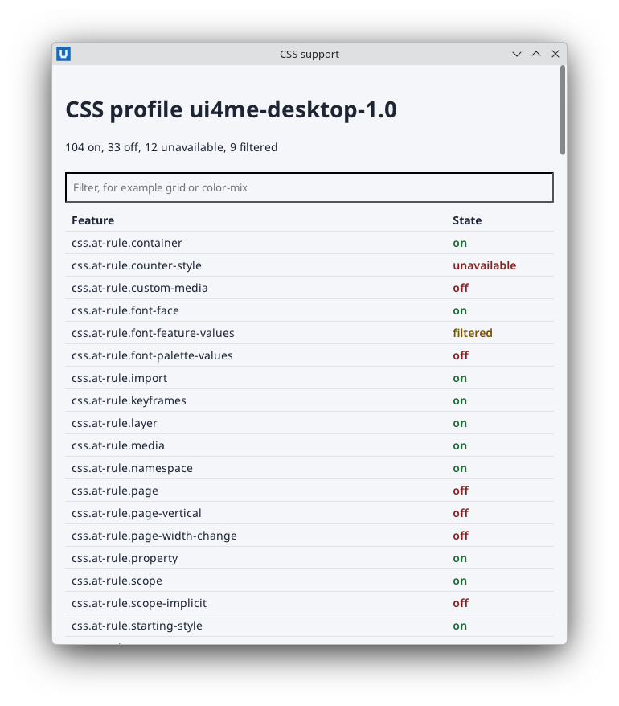

Style with the supported CSS¶
Goal: style your pages with confidence, knowing which CSS the renderer supports, and change styles at run time.
The host renders a documented desktop CSS profile (ui4me-desktop-1.0 in Core 1.0.3), not the whole web platform. Most everyday CSS works. The Core 1.0.3 profile reports, among others, flex and grid layout, calc(), color-mix(), light-dark(), oklch(), @media, @container, @layer, @supports, @font-face, @keyframes, animation, transition, :has() and ::backdrop as on; the examples on this site also rely on custom properties (var()), prefers-color-scheme and :invalid, which their tests check.
Ask the host instead of guessing¶
The css_profile document operation lists the profile's features with a state each (on, off, filtered, unavailable). Run this explorer and type a feature name:
"""CSS support explorer: ask the running host which CSS features its renderer profile enables.
Teaches: the low-level Document.command("css_profile") operation, rendering a large table from data
with escaping, and a live "input" filter. Use it before relying on a CSS feature: the renderer
implements a documented desktop profile, not every browser feature.
Run: python css_support.py
Guide: docs/how-to/styling.md
"""
import html
from collections import Counter
from nativehtmlkit import Application
PAGE = """<!doctype html>
<html lang="en"><head><meta charset="utf-8"><style>
body { font: 14px sans-serif; margin: 0; padding: 16px; background: #f4f6fa; color: #1d2433; }
input { width: 100%; box-sizing: border-box; padding: 8px; margin: 8px 0; }
table { border-collapse: collapse; width: 100%; }
td, th { text-align: left; padding: 4px 8px; border-bottom: 1px solid #dde3ee; }
td.state { font-weight: 600; }
tr.on td.state { color: #1d6b34; }
tr.off td.state, tr.unavailable td.state { color: #8a1f1f; }
tr.filtered td.state { color: #7a5300; }
</style></head>
<body>
<h1>CSS profile <span id="version"></span></h1>
<p id="summary"></p>
<input id="filter" type="search" placeholder="Filter, for example grid or color-mix" aria-label="Filter features">
<table><thead><tr><th>Feature</th><th>State</th></tr></thead><tbody id="rows"></tbody></table>
</body></html>"""
def main():
with Application.start(name="CSS support") as app:
window = app.open_html(PAGE, title="CSS support", width=640, height=720)
doc = window.document
profile = doc.command("css_profile")
features = sorted(profile["features"], key=lambda f: f["id"])
counts = Counter(f["state"] for f in features)
doc.set_text("version", profile.get("version", ""))
doc.set_text("summary", ", ".join(f"{count} {state}" for state, count in counts.most_common()))
def render(_event=None):
needle = doc.get_value("filter").strip().lower()
rows = [f'<tr class="{html.escape(f["state"])}"><td>{html.escape(f["id"])}</td>'
f'<td class="state">{html.escape(f["state"])}</td></tr>'
for f in features if needle in f["id"].lower()]
doc.replace_html("rows", "".join(rows) or '<tr><td colspan="2">No matching feature</td></tr>')
doc.on("input", render, element="filter")
render()
app.run()
if __name__ == "__main__":
main()

Real capture on KDE Plasma 6.6 Wayland with Core 1.0.3 and Python SDK 0.1.2.
In Core 1.0.3 the profile reports, for example, @page, @view-transition, @custom-media, zoom, shape-outside, line-clamp (the -webkit-line-clamp form is on) and initial-letter as off, @counter-style and ruby layout as unavailable, and ::part, ::slotted and :host as filtered. doc.command("explain", element=id) (Python) or Invoke-NativeHTMLKitDocumentCommand -Operation explain (PowerShell) helps when a rule does not apply as expected.
Switch themes at run time¶
"""Theme switcher: light/dark mode and accent colours with CSS custom properties.
Teaches: CSS custom properties (var()), @media (prefers-color-scheme) driven by the desktop or
overridden with Document.set_environment(), add_stylesheet() + replace_stylesheet() to swap one
small stylesheet at run time, and computed_style() to read back what the renderer resolved.
Run: python theme_switcher.py
Guide: docs/how-to/styling.md
"""
from nativehtmlkit import Application
PAGE = """<!doctype html>
<html lang="en"><head><meta charset="utf-8"><style>
:root { --bg: #f5f7fb; --panel: #ffffff; --text: #1b2230; --muted: #5d6879; --accent: #2f6fd0; }
@media (prefers-color-scheme: dark) {
:root { --bg: #10151e; --panel: #19212e; --text: #e4e9f1; --muted: #9aa7ba; }
}
body { margin: 0; padding: 20px; font: 15px sans-serif; background: var(--bg); color: var(--text); }
.panel { background: var(--panel); border-radius: 10px; padding: 16px; border: 1px solid color-mix(in srgb, var(--text) 15%, transparent); }
.muted { color: var(--muted); }
.accent { color: var(--accent); font-weight: 600; }
button.primary { background: var(--accent); color: white; border: 0; border-radius: 6px; padding: 8px 14px; }
form { display: grid; grid-template-columns: auto 1fr; gap: 8px 12px; align-items: center; margin-top: 12px; }
</style></head>
<body>
<div class="panel" id="panel">
<h1>Appearance</h1>
<p class="muted">The page uses CSS variables; switching a theme changes a few of them.</p>
<form id="appearance">
<label for="scheme">Colour scheme</label>
<select id="scheme"><option value="system">Follow the desktop</option><option value="light">Light</option><option value="dark">Dark</option></select>
<label for="accent">Accent</label>
<select id="accent"><option value="#2f6fd0">Blue</option><option value="#1f8a4c">Green</option><option value="#b4451f">Orange</option></select>
<span></span><button class="primary" id="apply">Apply</button>
</form>
<p>Resolved accent: <span class="accent" id="resolved"></span></p>
</div>
</body></html>"""
def main():
with Application.start(name="Theme switcher") as app:
window = app.open_html(PAGE, title="Theme switcher", width=520, height=420)
doc = window.document
# A separate, replaceable stylesheet for the run-time accent colour.
accent_sheet = doc.add_stylesheet(":root { --accent: #2f6fd0; }")["sheet"]
def show_resolved():
style = doc.computed_style(["color"], "resolved")
doc.set_text("resolved", style["properties"]["color"]["value"])
def apply(_event):
# "light"/"dark" override the desktop preference for this document; "system" follows it again.
doc.set_environment(color_scheme=doc.get_value("scheme"))
accent = doc.get_value("accent")
if accent.startswith("#") and len(accent) == 7: # only values from our own <select>
doc.replace_stylesheet(accent_sheet, f":root {{ --accent: {accent}; }}")
show_resolved()
doc.on("submit", apply, element="appearance")
show_resolved()
app.run()
if __name__ == "__main__":
main()
- Define colours as custom properties on
:root, and override them for@media (prefers-color-scheme: dark). set_environment(color_scheme="light" | "dark" | "system")overrides the desktop preference for one document (reduced_motion="reduce" | "no-preference" | "system"works the same way). PowerShell:Set-NativeHTMLKitEnvironment.add_stylesheet(css)returns a sheet handle;replace_stylesheet(sheet, css)swaps its rules;remove_stylesheet(sheet)drops it. PowerShell:Add-NativeHTMLKitStylesheet,Set-NativeHTMLKitStylesheet [-Remove].computed_style([properties], element)reports the resolved values and whether each property is supported.
Files, fonts and images¶
window.load_file(path)/Open-NativeHTMLKitFileloads an HTML file; relative stylesheet, image and font URLs resolve against its folder. For HTML strings, passasset_root=/-AssetRootto name that folder.- Remote (network) URLs are never loaded; ship assets with your app, or register in-memory resources with
register_resources()/Register-NativeHTMLKitResourcesand reference them asui4me-res://URLs. - The host ships the Noto Sans font (see its licence files), so text renders even when you bring no fonts.
Other entry points¶
- UI libraries: add CSS with
UI(extra_css=...)/New-NHKUi -ExtraCss; see Theme the UI library. - CLI:
--css FILEadds a trusted stylesheet toselect,viewandformwindows.